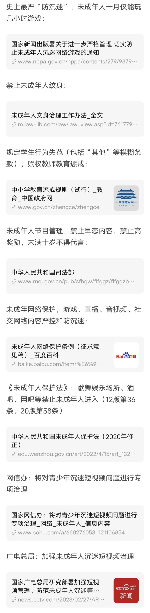
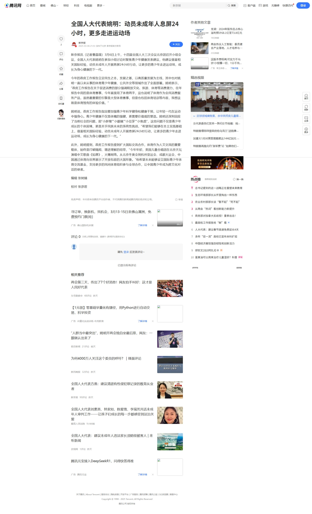
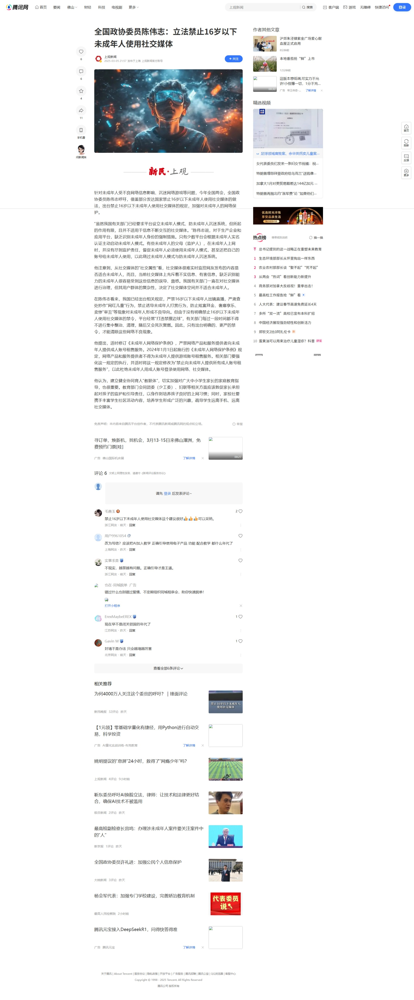
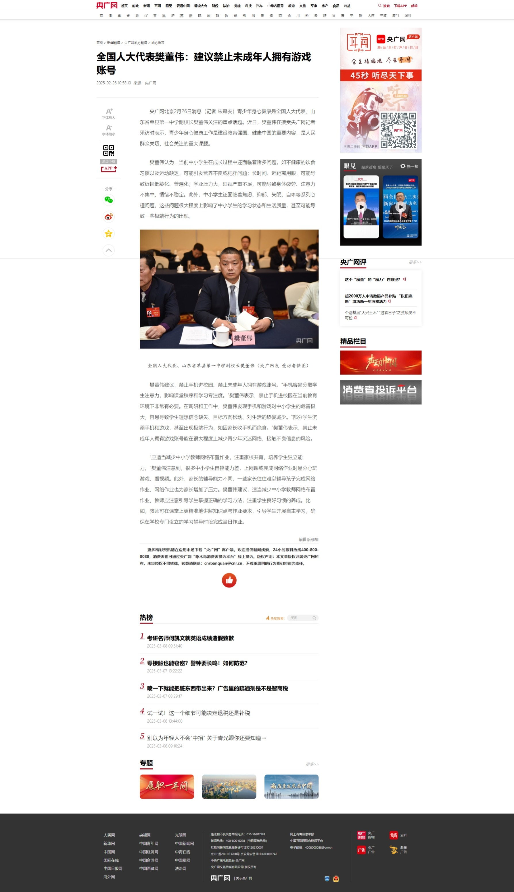

年龄本位论
更新历史
| 日期 | 版本 | 作者 | 更新内容 |
|---|---|---|---|
| 2025-03-14 | Shimada Mizuki | 修正笔误。 | |
| 2025-03-12 | Shimada Mizuki | 补充。 | |
| 2025-03-11 | Shimada Mizuki | 修正笔误。 | |
| 2025-03-10 | Shimada Mizuki | 补充。 | |
| 2025-03-05 | Shimada Mizuki | 补充，更新链接。 | |
| 2025-03-02 | Shimada Mizuki | 补充。 | |
| 2025-03-01 | Shimada Mizuki | 补充。 | |
| 2025-02-28 | Shimada Mizuki | 修正错别字，补充。 | |
| 2025-02-27 | Shimada Mizuki | 修正错别字。 | |
| 2025-02-26 | Shimada Mizuki | 补充。 | |
| 2025-02-25 | Shimada Mizuki | 补充。 | |
| 2025-02-23 | Shimada Mizuki | 更新。 | |
| 2025-02-22 | Shimada Mizuki | 写入初始内容。 | |
| 2025-02-21 | Shimada Mizuki | 创建页面。 |
本文介绍的主题是中国特色的针对未成年人的年龄歧视，而不是社会普遍的针对老年人的年龄歧视。
年龄本位论，又分为成年本位论、辈分本位论等，统称年龄歧视，指依靠年龄辨人心、将问题归咎于年龄的行为。
脉络
受到年龄歧视迫害最严重的当属中国境内的未成年人。中国传统思想讲究「辈分」「资历」，辈分越大、资历越深的越有话语权，年龄小的往往作为「晚辈」的身份，常不受重视和尊重，这便是最初的「年龄歧视」。
近现代，西方「成年」「未成年」的概念引入中国，各国都制定了《未成年人保护法》。中国为与国际接轨，也效仿制定《中华人民共和国未成年人保护法》，也正因此，人类有了基于年龄的等级划分。一些家长/别有用心之人为了在「晚辈」面前彰显自己的权威，刻意篡改/曲解《未成年人保护法》的内容，年龄歧视发展出了「成年本位论」，再进一步发展为限制未成年人的行为权利。
深受「成年本位论」「传统偏见」熏陶的家长和教育工作者开始因为自己的子女/学生实施他们所不期望的行为开始在现实、网络上闹事、大放厥词，或给予处分，1中国政府无奈抬出限制未成年人行使某些权力的条文来遏制这类情况的发生2。在应试教育「成绩至上」的影响下，「成年本位论」追随者以「保护」「利于学习」之名「控制」未成年人，未成年人几乎没有正当行使学习以外的行为的理由，作为未成年人权利剥削的思想支撑。
查看相关法条

该截图年代久远，出处已不可考，可能是来自知乎。
2019年10月25日，国家新闻出版署印发《关于防止未成年人沉迷网络游戏的通知》，要求法定节假日每日累计不得超过3小时，其他时间每日累计不得超过1.5小时。3「成年本位论」正式被国家给予支持，抬升到了一个新的高度，被称为「家长化」4，引发部分社会群体的关注与讨论，但这也衍生出了更多黑色产业。52021年8月30日，国家新闻出版署印发《关于进一步严格管理 切实防止未成年人沉迷网络游戏的通知》。6未成年人的娱乐权利被进一步剥夺，引发了网络上大量未成年人的愤慨。
在中国大陆境内，「未成年人保护」沦为了「成年本位论」对未成年人实施压迫、权利剥夺的挡箭牌，与「中华田园女权」无独有偶。简而言之，全世界都有「未成年保护」「女权」，而「成年本位论」「田园女权」却是中国独有。
大部分人即使是在未成年时期深受其害，到了成年时也会成为「成年本位论」的忠实追随者，这可能是「因为我淋过雨所以要撕破你们的伞」的人性所致，也可能来自于家长或教育工作者的思想灌输，或者镜像机制。
未成年有罪论
「未成年有罪论」是「成年本位论」的衍生产物，指事件中如有未成年人参与则未成年人全责/主要责任，本质是「柿子挑软的捏」的人性。
例如著名的「游戏有罪论」，表面是将教育失败的责任推给了游戏，实际上还是转移到了未成年人身上。
其他类似的，如将「抑郁症自杀的青少年越来越多」的现象归咎于「青少年心理承受能力差」而不是反思是不是自己的教育方式有问题。
这类人往往只是本着「觉得某些行为幼稚」的想法来对其行为做出评价。
自圆其说
「成年本位论」的支持者通常以未成年人心智不成熟、没有社会经验为由对未成年人实施控制。中国境内的中小学生通常都被限制在学校内进行封闭式管理，难以接触到外界的人和事，没有合适的条件致其「心智成熟、具有社会经验」，也导致他们通常都「畏惧强权」，变成任人捏的软柿子；而那些脱离了家长/学校的管控，无论其心智成熟/拥有社会经验与否的未成年人，往往被冠以「坏孩子」的名号。
谬误点
人的能力、学识、思维、三观等与人的人生经历、先后天发育有关，与年龄并无直接关联。年龄是生物具有固定规律的属性，而思想是动态的，会随着所见所闻的改变而改变，两者并不可相互映射。
示例
- 他们是互联网时代用户低龄化的产物；7
- 未成年人心智不成熟；
- 你们的主要任务是学习，别搞那些没有用的。
惯用词组
- 低龄化
- 成年/未成年
- 早恋8
- 心智不成熟
- 其他年龄歧视词汇
并发症
- 厌蠢症
- 双标
- 年龄优越感（如年纪小的人干点啥都得骂句幼稚）
- 其他可能涉及年龄歧视的行为
内容
未成年人实施以下行为被普遍认为是「越权操作（Unauthorized operations）」，主要为：
注：「越权操作」面向的是未成年人不被允许但允许成年人实施的行为。
恋爱、结婚、生育
展开相关法条
中国现行的计划生育政策的主要内容是：提倡晚婚晚育，少生优生；提倡一对夫妇生育一个孩子。
——中华人民共和国国务院新闻办公室《中国的计划生育》
第十七条 未成年人的父母或者其他监护人不得实施下列行为：
……
（九）允许、迫使未成年人结婚或者为未成年人订立婚约；
……——《中华人民共和国未成年人保护法》
第十三条 父母或者其他监护人应当对未成年子女或者被监护的未成年人的下列不良或者违法行为进行批评、教育、制止和矫正：
……
(九)早恋、非法同居和吸毒、卖淫、嫖娼;
……——《黑龙江省未成年人保护条例》
16、按时到校，不迟到，不早退，不旷课，不缺课，不早恋。
——《中学生日常行为规范》
吸烟、饮酒、购兑彩票
展开相关法条
第十七条 未成年人的父母或者其他监护人不得实施下列行为：
……
（四）放任、唆使未成年人吸烟（含电子烟，下同）、饮酒、赌博、流浪乞讨或者欺凌他人；
……
第五十九条 学校、幼儿园周边不得设置烟、酒、彩票销售网点。禁止向未成年人销售烟、酒、彩票或者兑付彩票奖金。烟、酒和彩票经营者应当在显著位置设置不向未成年人销售烟、酒或者彩票的标志；对难以判明是否是未成年人的，应当要求其出示身份证件。——《中华人民共和国未成年人保护法》
第五条 国家加强对烟草专卖品的科学研究和技术开发，提高烟草制品的质量，降低焦油和其他有害成份的含量。
国家和社会加强吸烟危害健康的宣传教育，禁止或者限制在公共交通工具和公共场所吸烟，劝阻青少年吸烟，禁止中小学生吸烟。——《中华人民共和国烟草专卖法》
第六条 国家和社会加强吸电子烟危害健康的宣传教育，劝阻青少年吸电子烟，禁止中小学生吸电子烟。
第二十二条 禁止向未成年人出售电子烟产品。电子烟经营者应当在显著位置设置不向未成年人销售电子烟的标志；对难以判明是否是未成年人的，应当要求其出示身份证件。——《电子烟管理办法》
37、珍爱生命，不吸烟，不喝酒，不滥用药物，拒绝毒品。不参加各种名目的非法组织，不参加非法活动。
——《中学生日常行为规范》
文身
展开相关法条
为加强未成年人文身治理，保护未成年人身心健康，
各相关部门和单位要指导本系统认真履行职责，推动工作落实。各地要组织做好宣传贯彻实施工作，加强统一部署，强化源头防控，落实部门责任，促进社会协同，开展监督检查，推动未成年人文身治理工作落到实处，切实保障未成年人合法权益。展开省略内容
经商中央宣传部、中央网信办、最高人民法院、最高人民检察院、教育部、公安部、民政部、司法部、商务部、卫生健康委、市场监管总局、广电总局、共青团中央、全国妇联达成一致，并报中央领导同志同意，现将《未成年人文身治理工作办法》印发给你们，请认真贯彻执行。
进入酒吧、KTV、网吧、游戏厅等娱乐场所
展开相关法条
第五十八条 学校、幼儿园周边不得设置营业性娱乐场所、酒吧、互联网上网服务营业场所等不适宜未成年人活动的场所。营业性歌舞娱乐场所、酒吧、互联网上网服务营业场所等不适宜未成年人活动场所的经营者，不得允许未成年人进入；游艺娱乐场所设置的电子游戏设备，除国家法定节假日外，不得向未成年人提供。经营者应当在显著位置设置未成年人禁入、限入标志；对难以判明是否是未成年人的，应当要求其出示身份证件。
——《中华人民共和国未成年人保护法》
直播或参与打赏、沉迷网络
展开相关法条
第七十六条 网络直播服务提供者不得为未满十六周岁的未成年人提供网络直播发布者账号注册服务；为年满十六周岁的未成年人提供网络直播发布者账号注册服务时，应当对其身份信息进行认证，并征得其父母或者其他监护人同意。
——《中华人民共和国未成年人保护法》
第二十八条 本法所称不良行为，是指未成年人实施的不利于其健康成长的下列行为：
……
（四）沉迷网络；
……——《中华人民共和国预防未成年人犯罪法》
第五条 学校、家庭应当教育引导未成年人参加有益身心健康的活动，科学、文明、安全、合理使用网络，预防和干预未成年人沉迷网络。
第十九条 未成年人网络保护软件、专门供未成年人使用的智能终端产品应当具有有效识别违法信息和可能影响未成年人身心健康的信息、保护未成年人个人信息权益、预防未成年人沉迷网络、便于监护人履行监护职责等功能。
……第五章 网络沉迷防治
第三十九条 对未成年人沉迷网络进行预防和干预，应当遵守法律、行政法规和国家有关规定。
教育、卫生健康、市场监督管理等部门依据各自职责对从事未成年人沉迷网络预防和干预活动的机构实施监督管理。
第四十条 学校应当加强对教师的指导和培训，提高教师对未成年学生沉迷网络的早期识别和干预能力。对于有沉迷网络倾向的未成年学生，学校应当及时告知其监护人，共同对未成年学生进行教育和引导，帮助其恢复正常的学习生活。
第四十一条 未成年人的监护人应当指导未成年人安全合理使用网络，关注未成年人上网情况以及相关生理状况、心理状况、行为习惯，防范未成年人接触危害或者可能影响其身心健康的网络信息，合理安排未成年人使用网络的时间，预防和干预未成年人沉迷网络。
第四十二条 网络产品和服务提供者应当建立健全防沉迷制度，不得向未成年人提供诱导其沉迷的产品和服务，及时修改可能造成未成年人沉迷的内容、功能和规则，并每年向社会公布防沉迷工作情况，接受社会监督。
第四十三条 网络游戏、网络直播、网络音视频、网络社交等网络服务提供者应当针对不同年龄阶段未成年人使用其服务的特点，坚持融合、友好、实用、有效的原则，设置未成年人模式，在使用时段、时长、功能和内容等方面按照国家有关规定和标准提供相应的服务，并以醒目便捷的方式为监护人履行监护职责提供时间管理、权限管理、消费管理等功能。
第四十四条 网络游戏、网络直播、网络音视频、网络社交等网络服务提供者应当采取措施，合理限制不同年龄阶段未成年人在使用其服务中的单次消费数额和单日累计消费数额，不得向未成年人提供与其民事行为能力不符的付费服务。
第四十五条 网络游戏、网络直播、网络音视频、网络社交等网络服务提供者应当采取措施，防范和抵制流量至上等不良价值倾向，不得设置以应援集资、投票打榜、刷量控评等为主题的网络社区、群组、话题，不得诱导未成年人参与应援集资、投票打榜、刷量控评等网络活动，并预防和制止其用户诱导未成年人实施上述行为。
第四十六条 网络游戏服务提供者应当通过统一的未成年人网络游戏电子身份认证系统等必要手段验证未成年人用户真实身份信息。
网络产品和服务提供者不得为未成年人提供游戏账号租售服务。
第四十七条 网络游戏服务提供者应当建立、完善预防未成年人沉迷网络的游戏规则，避免未成年人接触可能影响其身心健康的游戏内容或者游戏功能。
网络游戏服务提供者应当落实适龄提示要求，根据不同年龄阶段未成年人身心发展特点和认知能力，通过评估游戏产品的类型、内容与功能等要素，对游戏产品进行分类，明确游戏产品适合的未成年人用户年龄阶段，并在用户下载、注册、登录界面等位置予以显著提示。
第四十八条 新闻出版、教育、卫生健康、文化和旅游、广播电视、网信等部门应当定期开展预防未成年人沉迷网络的宣传教育，监督检查网络产品和服务提供者履行预防未成年人沉迷网络义务的情况，指导家庭、学校、社会组织互相配合，采取科学、合理的方式对未成年人沉迷网络进行预防和干预。
国家新闻出版部门牵头组织开展未成年人沉迷网络游戏防治工作，会同有关部门制定关于向未成年人提供网络游戏服务的时段、时长、消费上限等管理规定。
卫生健康、教育等部门依据各自职责指导有关医疗卫生机构、高等学校等，开展未成年人沉迷网络所致精神障碍和心理行为问题的基础研究和筛查评估、诊断、预防、干预等应用研究。
第四十九条 严禁任何组织和个人以虐待、胁迫等侵害未成年人身心健康的方式干预未成年人沉迷网络、侵犯未成年人合法权益。——《未成年人网络保护条例》
其他「不利于未成年人身心健康」的行为
即所谓「不良行为」[模糊概念]。
展开相关法条
第二十八条 本法所称不良行为，是指未成年人实施的不利于其健康成长的下列行为：
……
（九）其他不利于未成年人身心健康成长的不良行为。——《中华人民共和国预防未成年人犯罪法》
共性
阻止未成年人实施以上行为的人几乎都是认为未成年人「心智不成熟」。但他们采用限制权利而非加强教育的方式解决该问题，也有人只是为了满足自己对于孩子的控制欲。防止这类行为对未成年人产生危害最好的办法不是杜绝其实施这类行为，而是应当适当引导教育，行为/思想教育的目的是教人理性而非从命、保守、畏缩。[个人观点]
相关人大代表提议
全国人大代表姚明：动员未成年人息屏24小时，更多走进运动场
原文存档
原贴地址
新京报 2025-03-06 21:53 发布于北京 新京报官方账号
展开图片
新京报讯（记者曹晶瑞）3月6日上午，十四届全国人大三次会议北京团召开小组会议，全国人大代表姚明在参加小组讨论时聚焦青少年健康发表建议，他建议借鉴相关国际经验，动员未成年人开展息屏24小时行动，让更多的青少年走进运动场，成长为身心健康的下一代。
今年的政府工作报告立足民生之本，发展之基，以高质量发展为主线，其中也对姚明一直以来从事的体育青少年健康、公共外交等领域作出了全面部署。姚明表示，“政府工作报告在关于促进消费的部分强调释放文化、旅游、体育等消费潜力，往年报告中用的是体育赛事，今年直接用了体育两字，这也说明了体育作为全民消费服务产品，虽然最重要的引擎是大型体育赛事，但是也包括体育培训等内容，我想这就是体育独有的体验价值。”
姚明说，政府工作报告指出要加强青少年科学健身和健康干预，让年轻一代在运动中强身心。青少年健康不仅是体魄的强健，更需要价值观的塑造。姚明还深刻回应了当前社会的问题，即“小胖墩”“小眼镜”“小豆芽”“小焦虑”，这些问题不仅是青少年成长的个体困境，更是关乎民族未来的系统性挑战，“希望我们能够在本土实践基础上，借鉴相关国际经验，动员未成年人开展息屏24小时行动，让更多的青少年走进运动场，成长为身心健康的下一代。”
此外，姚明提到，政府工作报告提到扩大国际交流合作，体育作为人文交流的重要载体，始终是打破隔阂、增进理解的纽带，“今年年初，美国儿童合唱团在北京天坛演唱中文歌曲《如愿》，火爆网络。从北京冬奥会到杭州亚运会、成都大运会，中国通过体育向世界展示了开放包容的大国形象。”他希望未来能够设立国际青少年体育交流基金，支持更多的民间体育组织参与全球合作，让中国青少年成为跨文化对话的使者。
编辑 张树婧
校对 张彦君
全国政协委员陈伟志：立法禁止16岁以下未成年人使用社交媒体
原文存档
原贴地址
上观新闻 2025-03-05 21:57 发布于上海 上观新闻官方账号
展开图片
针对未成年人受不良网络信息影响、沉迷网络游戏等问题，今年全国两会，全国政协委员陈伟志呼吁，借鉴部分发达国家禁止16岁以下未成年人使用社交媒体的做法，出台禁止16岁以下未成年人使用社交媒体的规定，加强对未成年人的网络保护。
“虽然我国有关部门已经要求平台设立未成年人模式、防未成年人沉迷系统，但所起的作用有限，且并不适用于信息不断交互的社交媒体。”陈伟志说，对于生产企业和应用平台，缺乏识别未成年人身份的强制措施。只有少数平台会根据未成年人实名认证主动启动未成年人模式。有些未成年人的父母（监护人），在未成年人上网时，并没有尽到监护责任，督促未成年人必须使用未成年人模式，甚至还把自己的账号给未成年人使用，以此绕过未成年人模式与防未成年人沉迷系统。
他注意到，从社交媒体的“社交属性”看，社交媒体很难实时监控网友发布的内容是否适合未成年人，而且，当前社交媒体上充斥着不实信息、有害信息，缺乏识别能力的未成年人很容易受到这些信息的误导、蛊惑。我国有关部门一直在对社交媒体进行治理，但其用户群体的复杂性，决定了社交媒体空间并不适合未成年人。
在陈伟志看来，我国已经出台相关规定，严禁16岁以下未成年人出镜直播，严肃查处炒作“网红儿童”行为，禁止诱导未成年人打赏行为，防止炫富拜金、奢靡享乐、卖惨“审丑”等现象对未成年人形成不良导向。但由于没有明确禁止16岁以下未成年人使用社交媒体的禁令，平台经常“打违禁擦边球”，有关部门每过一段时间都不得不进行集中整治、清理，随后又会死灰复燃。因此，只有出台明确的、更严的禁令，才能清除这些网络不良现象。
他提出，适时修订《未成年人网络保护条例》，严禁网络产品和服务提供者向未成年人提供成人账号租售服务。2024年1月1日起施行的《未成年人网络保护条例》规定，网络产品和服务提供者不得为未成年人提供游戏账号租售服务。相关部门要强化这一规定的执行，并适时将这一规定修改为“禁止向未成年人提供所有成人账号租售服务”，以此杜绝未成年人用成人账号登录使用网络、社交媒体。
他认为，建立健全协同育人“教联体”，切实加强对广大中小学生家长的家庭教育指导，也很重要。教育部门会同团委（少工委）、妇联等相关方面应该敦促家长承担起对孩子的监护和引导责任，以身作则培养孩子良好的上网习惯；同时，家校社要携手丰富学生社区活动内容，培养学生形成广泛的兴趣，疏导学生远离手机、远离社交媒体。
全国人大代表樊董伟：建议禁止未成年人拥有游戏账号
原文存档
原贴地址
2025-02-26 10:58:10
展开图片
央广网北京2月26日消息（记者 朱冠安）青少年身心健康是全国人大代表、山东省单县第一中学副校长樊董伟关注的重点话题。近日，樊董伟在接受央广网记者采访时表示，青少年身心健康工作是建设教育强国、健康中国的重要内容，是人民群众关切、社会关注的重大课题。
樊董伟认为，当前中小学生在成长过程中还面临着诸多问题，如不健康的饮食习惯以及运动缺乏，可能引发营养不良或肥胖问题；长时间、近距离用眼，可能导致近视低龄化、普遍化；学业压力大，睡眠严重不足，可能导致身体疲劳、注意力不集中、情绪不稳定。此外，中小学生还面临着焦虑、抑郁、失眠、自卑等系列心理问题，这些问题很大程度上影响了中小学生的学习状态和生活质量，甚至可能导致一些极端行为的出现。
樊董伟建议，禁止手机进校园、禁止未成年人拥有游戏账号。“手机容易分散学生注意力，影响课堂秩序和学习专注度。”樊董伟表示，禁止手机进校园在当前教育环境下非常有必要。在调研和工作中，樊董伟发现手机和游戏对中小学生的危害极大，容易导致学生理想信念缺失、目标方向松动、对生活的热爱减少。“部分学生沉溺手机和游戏，甚至出现极端行为，如因家长收手机而绝食。”樊董伟表示，禁止未成年人拥有游戏账号能在很大程度上减少青少年沉迷网络、接触不良信息的风险。
“应适当减少中小学教师网络布置作业，注重家校共育，培养学生独立能力。”樊董伟注意到，很多中小学生自控能力差，上网课或完成网络作业时易分心玩游戏、看视频。此外，家长的辅导能力不同，一些家长往往难以辅导孩子完成网络作业，网络作业也为家长增加了压力。樊董伟建议，适当减少中小学教师网络布置作业，教师应注意引导学生掌握正确的学习方法，注重学生良好习惯的养成。比如，教师可在课堂上更精准地讲解知识点与作业要求，引导学生开展自主学习，确保在学校专门设立的学习辅导时段完成当日作业。
《少年因纹身被学校通知休学 家长将纹身店老板告上法庭》，若链接失效，查看档案馆。↩
《未成年人文身治理工作办法》，若链接失效，查看档案馆。↩
《国家新闻出版署关于防止未成年人沉迷网络游戏的通知 北京市新闻出版局（北京市版权局）》，若链接失效，查看档案馆。↩
《铲除网游“防沉迷”背后的灰黑产业-中国法院网》，若链接失效，查看档案馆。↩
《国家新闻出版署关于进一步严格管理切实防止未成年人沉迷网络游戏的通知 中国政府网》，若链接失效，查看档案馆。↩
《网“左”为啥总有一股浓郁的爹味？》，若链接失效，查看档案馆。↩
《谈谈“早恋”这个极富中国特色的词 - 微信公众平台》，若链接失效，查看档案馆。↩